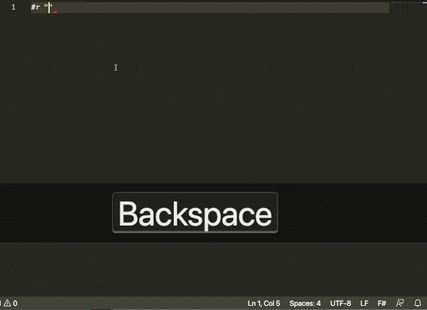

The F# Type Provider is a mechanism that enables smooth interoperability
between F# and R.
The Type Provider discovers R packages that are available
in your R installation and makes them available as .NET namespaces
underneath the parent namespace RProvider.
The Type Provider makes it possible to use all of R capabilities, from the F# interactive environment. It enables on-the-fly charting and data analysis using R packages, with the added benefit of IntelliSense over R, and compile-time type-checking that the R functions you are using exist. It allows you to leverage all of .NET libraries, as well as F# unique capabilities to access and manipulate data from a wide variety of sources via Type Providers.

The above example is run through F# interactive (dotnet fsi).
F# is a multi-paradigm language that supports functional, object and imperative programming, with the emphasis on functional-first programming. F# runs on the .NET runtime and is a compiled, statically typed language with a strong type system and type inference. F# is a general purpose programming language, and is particularly well-suited for scientific/numerical computing.
R is an Open Source language for statistical computing. R offers a wide range of high-quality, community-developed packages, covering virtually every area of statistics, econometrics or machine learning. It is also famous for its charting capabilities, making it a great tool to produce publication-quality graphics. R is an interpreted, dynamically typed language that is typically used from its GUI, RStudio, or command line interactive environment.
RProvider is distributed as a nuget package. After setting up the pre-requisites (installing .NET 5+, R and setting the R_HOME environment variable, you can use as follows:
In an F# script:
#r "nuget:RProvider"
open RProvider
To add to a .NET project, from the terminal:
dotnet add package RProvider
The project has been originally developed by BlueMountain Capital and contributors.
For compilation of the source, you will need F# 5.0 or later. For runtime you'll need .NET 5.
The project is hosted on GitHub where you can report issues, fork the project and submit pull requests.